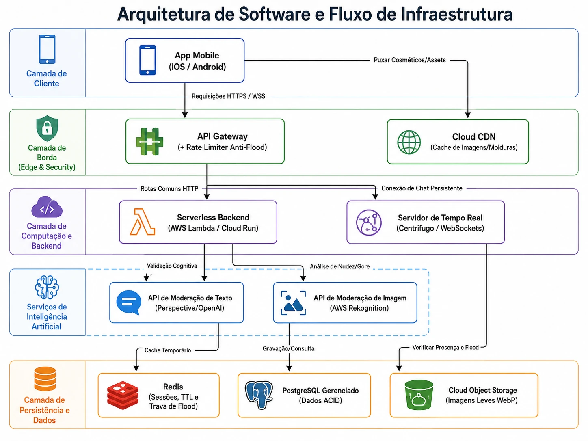

Arquitetura como capacidade complementar
O VeoNyx explora uma plataforma mobile-first de comunidades com identidade global e perfis locais. No portfólio, ele demonstra organização de requisitos, modelagem de domínio, integração entre componentes e documentação de decisões.
O projeto está em desenvolvimento e QA local. Não é apresentado como produto em produção nem como prova principal de atuação profissional.
Identidade global e contexto por comunidade
- Conta global com sessão e dados privados separados do perfil público.
- Perfil local por comunidade, com cargo, tags e identidade contextual.
- Posts, comentários, wikis, salvos e chats públicos.
- Moderação com denúncias, logs, alertas e punições temporárias.
- Regras de permissão e limites para reduzir abuso.
Separação entre aplicativo, API e serviços
Flutter organiza navegação, sessão e experiência mobile.
NestJS concentra regras, autenticação JWT e autorização contextual.
Prisma e PostgreSQL estruturam identidades, comunidades e conteúdo.
Redis, BullMQ e MinIO apoiam cache, filas e armazenamento no ambiente local.
WebSocket e controles de presença/flood atendem os fluxos de chat. Observabilidade e infraestrutura externa permanecem parte da evolução planejada.
Implementação, validação e roadmap
Implementado e documentado
- Autenticação e sessão JWT.
- Perfis globais e locais por comunidade.
- Comunidades, posts, comentários, curtidas, salvos e wikis.
- Chats públicos, notificações internas e moderação contextual.
- Infraestrutura local com PostgreSQL, Redis e MinIO.
Em validação
- Última rodada de correções no aplicativo mobile.
- Upload de mídia e política de limpeza.
- Experiência de notificações e loja cosmética.
Diagrama mantido como documentação técnica


O que o estudo procura demonstrar
- Separar identidade global da identidade local por comunidade.
- Aplicar autenticação, autorização contextual e rate limiting.
- Usar dados relacionais para consistência e Redis para estados temporários.
- Desacoplar tarefas assíncronas por filas quando necessário.
- Planejar moderação, Trust & Safety e observabilidade antes de escala pública.
Sem promessas de produção
- O projeto ainda não está preparado para produção pública.
- Upload, busca, observabilidade e testes E2E exigem evolução.
- A validação final da última rodada no aparelho físico permanece pendente.
- Serviços de nuvem e escala do diagrama representam direção arquitetural, não operação comprovada.
Roadmap
- Consolidar QA mobile e política de mídia.
- Evoluir métricas, alertas e testes E2E.
- Planejar storage compatível com S3 e CDN quando houver necessidade real.
- Ampliar privacidade, moderação e Trust & Safety.
A documentação pública diferencia implementação atual, decisões e cenário futuro.
Abrir relatório